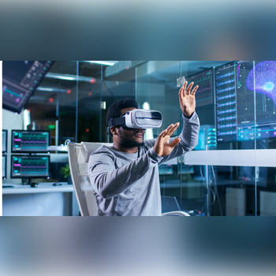

OTIF SPACE AFRICA organise la première édition de son forum, intitulé MASS (Marché Africain des Solutions Spatiales), qui se tiendra du 2 au 6 décembre 2024 à l'hôtel Sofitel d'Abidjan, en Côte d'Ivoire. Cet événement rassemblera les acteurs du développement, incluant les secteurs public et privé, les organisations internationales, les ONG, la société civile, le secteur académique, ainsi que les institutions financières et bancaires.
Pour cette édition, le thème de la conférence sera « Gestion Efficace des Ressources Naturelles et des Catastrophes ». Le MASS sera l'occasion de présenter et de discuter des solutions spatiales les plus innovantes pour relever les défis liés à la gestion des ressources naturelles et à la préparation aux catastrophes en Afrique.